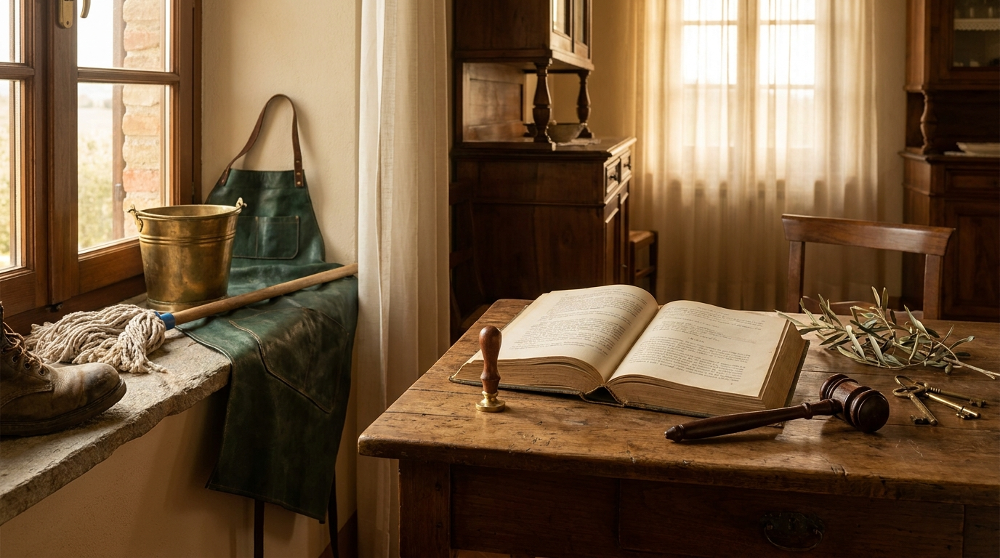

Infortuni nei lavori domestici: quando il committente privato risponde
Un privato che incarica un tecnico per lavori nella propria abitazione può rispondere penalmente se l'esecutore si infortuna o causa un danno? La Cassazione affronta il tema della cosiddetta culpa in eligendo, cioè la colpa nella scelta dell'incaricato. La questione è delicata: gli obblighi del committente imprenditore non coincidono con quelli del privato cittadino, e i piani vanno tenuti distinti.

Il caso
La pronuncia riguarda una committente privata che aveva affidato lavori nella propria abitazione a un tecnico. A seguito dell'infortunio, è stata chiamata a rispondere a titolo di colpa. Il principio affermato è circoscritto: il committente privato deve verificare la qualificazione professionale di chi incarica, ma non è tenuto a controllare le concrete modalità tecniche di esecuzione dei lavori.
Una precisazione di metodo. Gli estremi della sentenza (sezione e numero) vanno verificati prima di attribuirle portata generale: il principio qui esposto va letto come ricostruzione del fatto e dell'orientamento, non come massima consolidata di applicazione automatica a ogni situazione domestica.
Inquadramento normativo: due piani da non confondere
Il primo errore da evitare è applicare al privato cittadino, senza distinzioni, gli obblighi del committente in materia di sicurezza.
L'art. 26 del D.lgs. 81/2008 disciplina gli obblighi del datore di lavoro committente nei contratti d'appalto o d'opera. È una norma pensata per l'ambito imprenditoriale. Il comma 1 esclude espressamente dalla disciplina i committenti privati che fanno eseguire lavori nei propri immobili senza svolgere attività d'impresa. In altre parole: chi chiama un elettricista per casa propria non è, di regola, un "datore di lavoro committente" ai sensi del Testo Unico sicurezza.
Su cosa si fonda allora la responsabilità del privato? Su un piano diverso. La colpa, se sussiste, va ricostruita secondo le categorie generali:
- la culpa in eligendo, cioè la colpa nella scelta di un soggetto privo dell'idoneità professionale richiesta dalla natura dei lavori;
- l'art. 589 c.p. (omicidio colposo) o l'art. 590 c.p. (lesioni colpose), quando l'evento è riconducibile a quella scelta negligente;
- l'art. 2087 c.c., ma solo ove il privato si configuri come datore di lavoro di fatto, ipotesi distinta dal semplice incarico a un professionista autonomo.
Non si tratta dunque di estendere l'art. 26 al privato, ma di valutare se la scelta dell'incaricato sia stata colpevole.
Cosa cambia per il committente privato
Il punto centrale è la distinzione tra due verifiche diverse.
La verifica della qualificazione spetta al committente: affidare un impianto elettrico a un soggetto privo delle abilitazioni necessarie può integrare colpa. Chi sceglie un esecutore manifestamente inidoneo si espone a responsabilità.
La verifica tecnica delle modalità esecutive non spetta al committente privato. Non è tenuto a sindacare come il professionista esegua materialmente l'opera, attività che presuppone competenze specialistiche e che resta in capo all'esecutore.
Una seconda precisazione: non si tratta di responsabilità oggettiva. Il privato non risponde per il solo fatto che si sia verificato un infortunio. Occorre la colpa (la scelta negligente) e il nesso causale tra quella scelta e l'evento dannoso. Se l'evento dipende esclusivamente da un'imperizia imprevedibile dell'esecutore qualificato, il giudizio sul committente cambia.
Cosa fare in concreto
- Verifica la qualificazione prima di incaricare. Richiedi e conserva visura camerale, abilitazioni e iscrizioni ai registri pertinenti (ad esempio l'abilitazione per gli impianti elettrici).
- Affida i lavori a soggetti strutturati. Imprese o professionisti regolarmente iscritti offrono una tracciabilità della qualificazione che il singolo occasionale non garantisce.
- Documenta l'incarico per iscritto. Un contratto d'opera che indichi oggetto, qualifica dell'esecutore e responsabilità organizzative del cantiere chiarisce i ruoli e tutela in caso di contestazione.
- Evita il lavoro non dichiarato. L'incarico a soggetti privi di posizione regolare aggrava la posizione del committente sotto il profilo della colpa nella scelta, oltre alle conseguenze fiscali e contributive.
- Per interventi complessi può essere opportuno un supporto contrattuale qualificato, che definisca con precisione la ripartizione degli obblighi tra committente ed esecutore.
In sintesi
Il committente privato non è un controllore tecnico, ma neppure un soggetto immune. Risponde quando sceglie male chi incarica e quella scelta è causa del danno. La linea di confine passa dalla qualificazione: documentarla è la difesa più solida.
---
Contributo informativo a cura di Tamburro & Partners - Avv. Giuseppe Tamburro. Non costituisce parere legale.
Ogni storia di lavoro ha i suoi tempi.
Se gestisci HR e vuoi un confronto su contenzioso, ispezioni o licenziamenti, scrivi allo studio. Ti rispondiamo entro un giorno lavorativo.